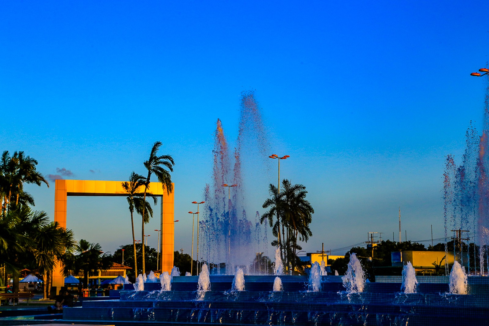

Roraima
Roraima, o estado mais a norte do Brasil, é conhecido pela Floresta Amazónica. A capital, Boa Vista, na margem oeste de Rio Branco, fica próxima dos parques nacionais da Serra da Mocidade, a sudoeste, e do Monte Roraima, a norte. Com penhascos íngremes e um misterioso cume plano, o Monte Roraima, partilhado com a Venezuela e a Guiana, foi, presumivelmente, a inspiração de Sir Arthur Conan Doyle para "O Mundo Perdido".
Pontos Turísticos
Praça das águas

Aquamak

Parque Nacional do Monte Roraima